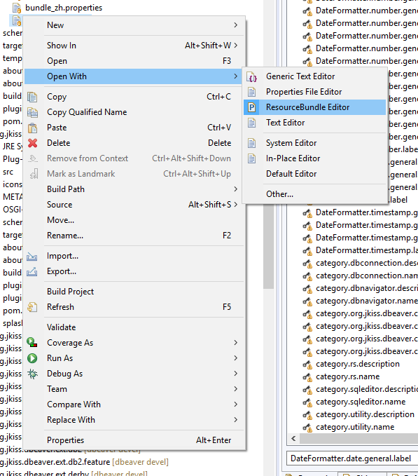
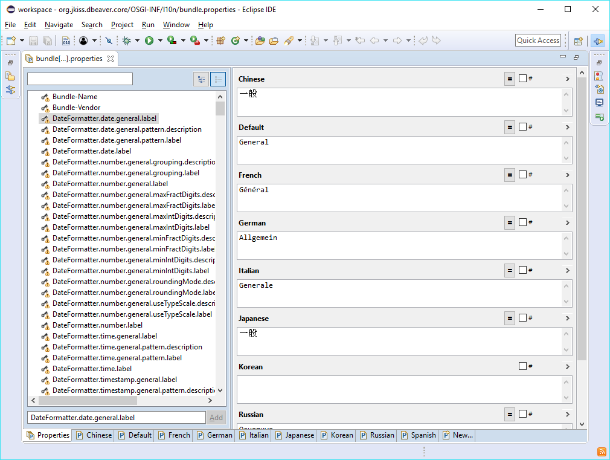
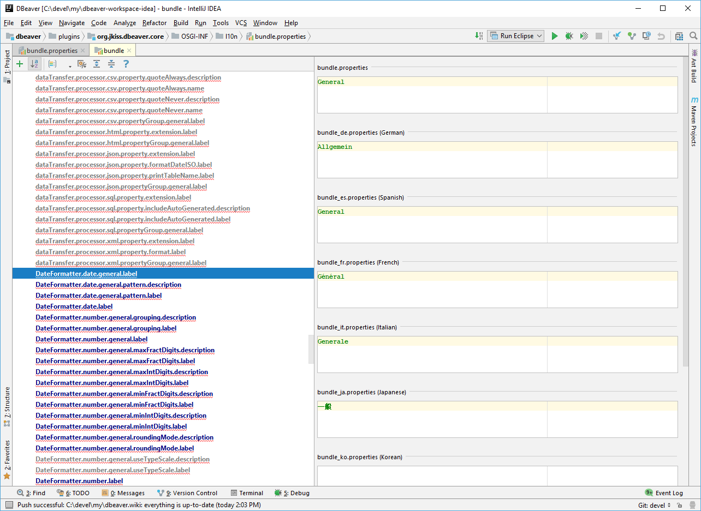

Localization (i18n + l10n)
DBeaver uses standard properties-based i18n model.
All translatable resources reside in *.properties file. Each plugin (bundle) has its own set of resources.
Almost all plugins have at least bundles.properties resource. Bigger plugins have additional resources in src folder.
See full list of property files below.
bundle.properties contains original string in English language. All translated resources are placed in bundle_XX.properties files where XX is two-letter language code.
Environment setup
- Clone DBeaver repository
- Install [[GitHub Desktop|https://desktop.github.com/]]
- In the top menu select File -> Clone Repository
- In the appeared popup window select the URL tab and paste DBeaver URL:
https://github.com/dbeaver/dbeaver.git - Press Clone
Localizing tools
Eclipse IDE
- Install Eclipse (any version, any package)
- Install [[ResourceBundle Editor|http://essiembre.github.io/eclipse-rbe/]] plugin.
- Main menu Help ->
Install New Software->https://raw.githubusercontent.com/essiembre/eclipse-rbe/master/eclipse-rbe-update-site/site.xml - Main menu -> File -> Import... -> General -> Existing Projects into Workspace -> Browse
- Choose your DBeaver clone directory and import all projects
- Open some properties file (e.g. bundle.properties - see below ) in ResourceBundle editor: 
- Edit properties: 
Intellij IDEA Community

Push your changes
- Open GitHub Desktop
- At the top select Current branch and press New Branch button
- Create a new branch with a name related to l10n
- Commit to the new branch
- Publish brunch/push (right button at the top)
- Fetch origin (right button at the top)
- In the main menu select Branch -> Create Pull Request
- On the opened GitHub page add some meaningful text for your pull request name and press Create pull request button
- Return to GitHub Desktop and switch to devel branch
or
Create a Pull Request with your changes (in branch devel)
https://help.github.com/articles/creating-a-pull-request-from-a-fork/
Properties
| Module | Purpose | File |
|---|---|---|
| Core | Commands, properties | plugins/org.jkiss.dbeaver.core/OSGI-INF/l10n/bundle.properties |
| Core | Messages,UI strings | plugins/org.jkiss.dbeaver.core/src/org/jkiss/dbeaver/core/CoreResources.properties |
| API | Properties | plugins/org.jkiss.dbeaver.model/OSGI-INF/l10n/bundle.properties |
| API | Messages | plugins/org.jkiss.dbeaver.model/src/org/jkiss/dbeaver/model/messages/ModelResources.properties |
| UI | Properties | plugins/org.jkiss.dbeaver.ui/OSGI-INF/l10n/bundle.properties |
| UI | Messages | plugins/org.jkiss.dbeaver.ui/src/org/jkiss/dbeaver/bundle/UIMessages.properties |
| Application (Standalone) | Commands, properties | plugins/org.jkiss.dbeaver.core.application/OSGI-INF/l10n/bundle.properties |
| Application (Eclipse) | Commands, properties | plugins/org.jkiss.dbeaver.core.eclipse/OSGI-INF/l10n/bundle.properties |
| Data Transfer | Commands, properties | plugins/org.jkiss.dbeaver.ext.data.transfer/OSGI-INF/l10n/bundle.properties |
| Data Transfer | Messages | plugins/org.jkiss.dbeaver.ext.data.transfer/src/org/jkiss/dbeaver/tools/transfer/internal/DTMessages.properties |
| ERD | Commands, properties | plugins/org.jkiss.dbeaver.ext.erd/OSGI-INF/l10n/bundle.properties |
| ERD | Messages | plugins/org.jkiss.dbeaver.ext.erd/src/org/jkiss/dbeaver/ext/erd/ERDResources.properties |
| SSH | Commands, properties | plugins/org.jkiss.dbeaver.net.ssh/OSGI-INF/l10n/bundle.properties |
| SSH | Messages | plugins/org.jkiss.dbeaver.net.ssh.ui/src/org/jkiss/dbeaver/ui/net/ssh/SSHUIMessages.properties |
| Generic driver | Properties | plugins/org.jkiss.dbeaver.ext.generic/OSGI-INF/l10n/bundle.properties |
| Generic driver | Messages | plugins/org.jkiss.dbeaver.ext.generic/src/org/jkiss/dbeaver/ext/generic/GenericResources.properties |
| MySQL | Properties | plugins/org.jkiss.dbeaver.ext.mysql/OSGI-INF/l10n/bundle.properties |
| MySQL | Messages | plugins/org.jkiss.dbeaver.ext.mysql/src/org/jkiss/dbeaver/ext/mysql/MySQLResources.properties |
| .. | .. | The same for Oracle (ext.oracle), DB2 (ext.db2), Exasol (ext.exasol), PostgreSQL (ext.postgresql) and SQL Server (ext.mssql) |
Testing you changes
Once you have changed resource you might want to test your changes. You can: - Run DBeaver directly from [[Eclipse workspace|Develop-in-Eclipse]] - [[Build DBeaver from source|Build-from-sources]] and run executable
Changing interface language
You can change language of UI in DBeaver:
- Preferences->Database->Language
- In dbeaver.ini before line -vmargs add following lines
-nl
XX
where XX is two-letter language code (zh, de, ru, etc).